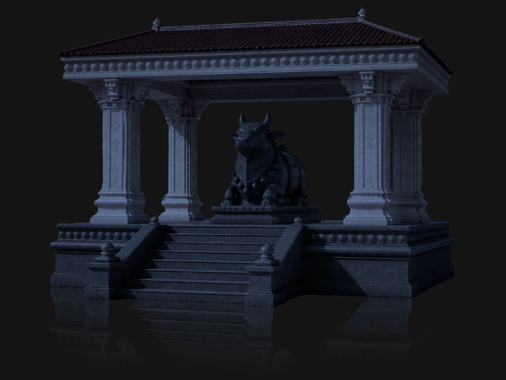
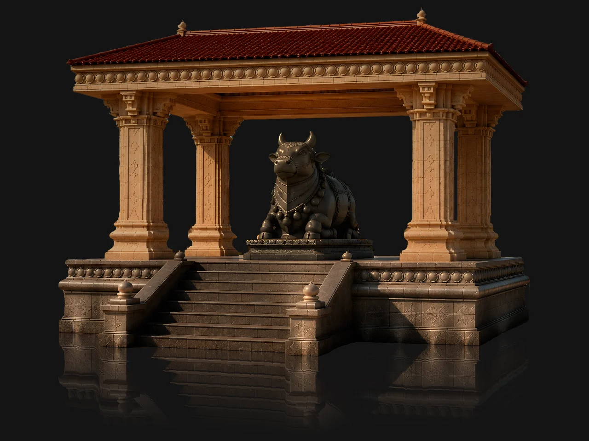
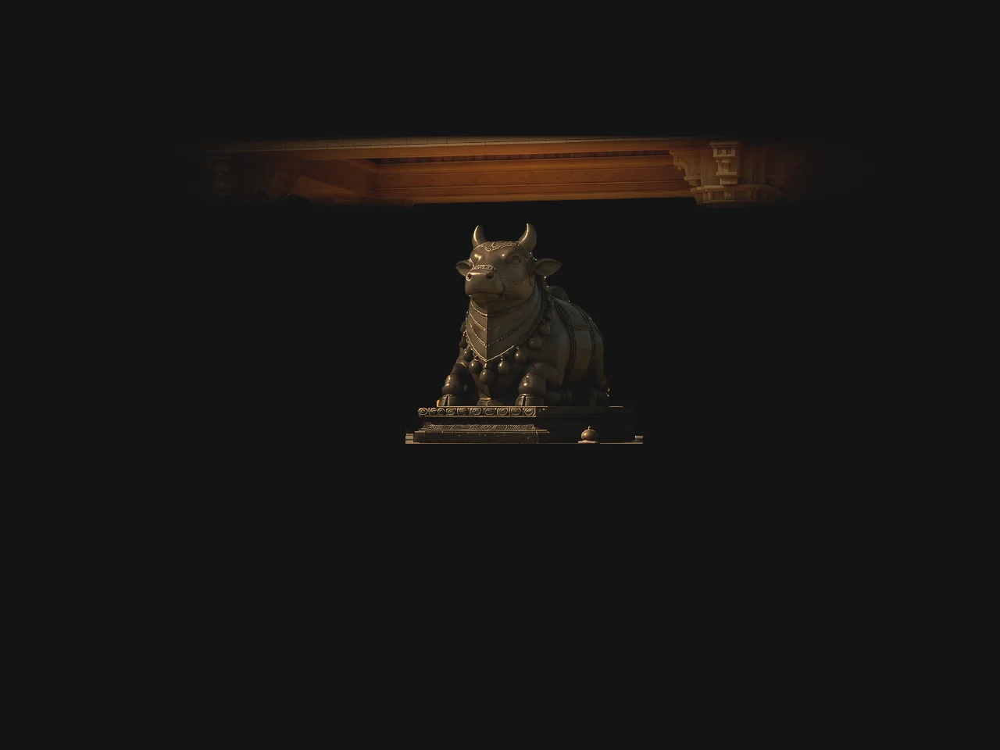
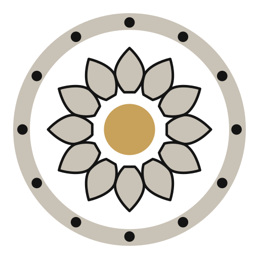
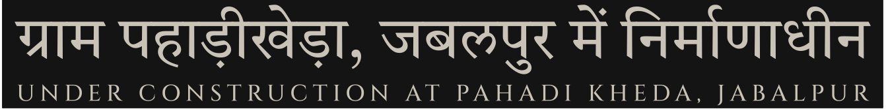
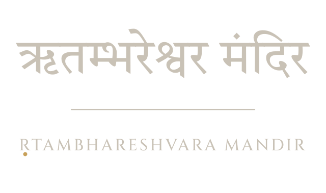

ग्राम पहाड़ीखेड़ा, मनेरी रोड · बरेला – 483001 · जिला जबलपुर (म.प्र.)
Vill. Pahadi Kheda, Maneri Road · Barela (M.P.) – 483001
संस्थापक — श्री राजेश दुबे · श्रीमती किरण दुबे
Founders — Shri Rajesh Dubey · Smt. Kiran Dubey